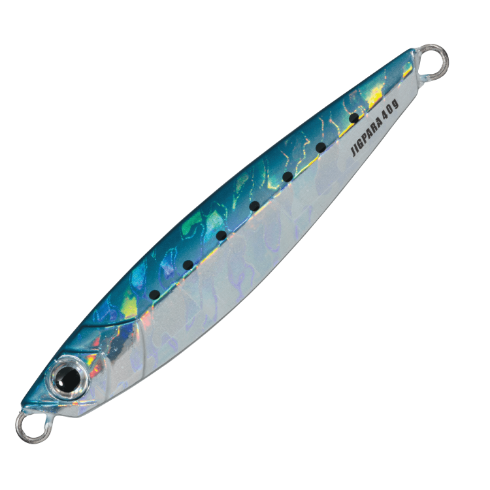
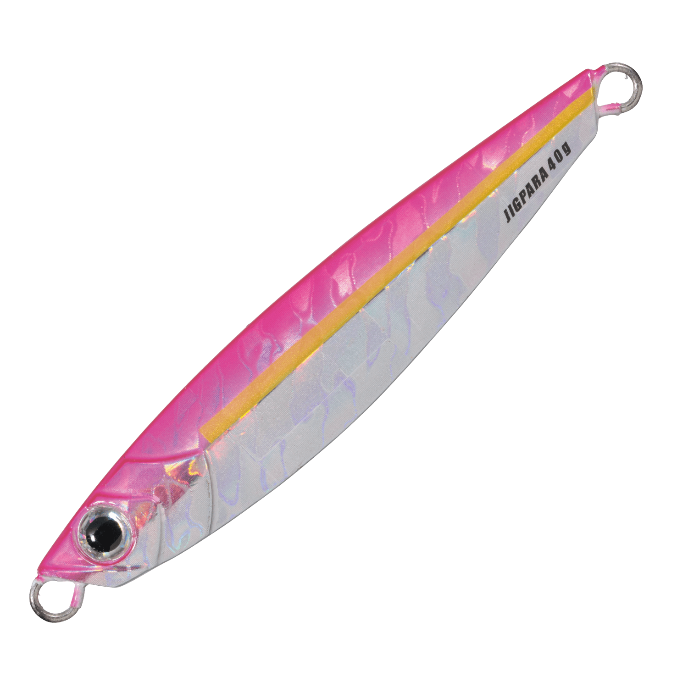
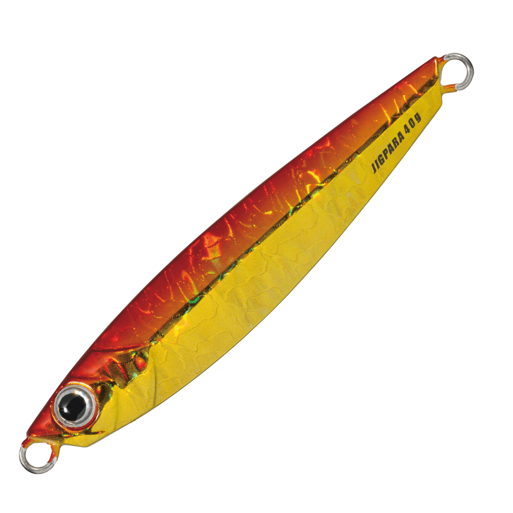
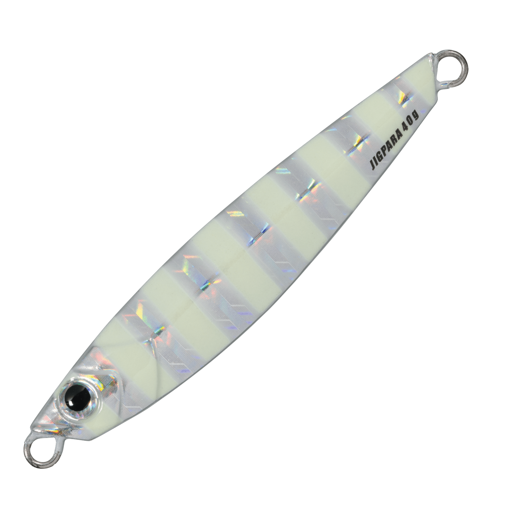

ジグパラショート
（メタルジグ）
ジグパラショート（JIGPARA SHORT）はMajor Craft（メジャークラフト）のメタルジグです。
フィールド・ターゲット・アクションを選ばず使える「キング・オブ・スタンダードジグ」として、ライトショアジギングで定番になっているジグパラのショートモデル。空気抵抗の小さいコンパクトシルエットによる圧倒的な飛距離と、手頃な価格で根掛かりを恐れず投げられるのが最大の魅力です。

画像出典:メジャークラフト公式HP
スペック
- メーカー
- Major Craft（メジャークラフト）
- タイプ
- メタルジグ（センターバランス）
- ウエイト
- 20g／30g／40g／50g／60g
- フック
- フロント・リアに日本製オリジナルフック搭載
- ターゲット
- 青物・サワラ・タチウオ・ヒラメ・根魚など
- 価格
- オープン価格
▼今すぐチェック
ジグパラショートの特徴
圧倒的な飛距離と、ただ巻き〜ジャークまで全アクションに対応する定番ジグ
-
コンパクトシルエットで圧倒的な飛距離
空気抵抗の小さいコンパクトシルエットが圧倒的な飛距離を生み出す。ショアジギングで最大の武器となる飛距離で、沖のナブラや潮目まで届かせやすい。
-
センターバランス×左右非対称ボディで全アクション対応
センターバランスで左右非対称の扱いやすい形状は、ハイピッチからスローまであらゆるジャークに対応。引き重り感が少なく、食わせのタイミングも作りやすい。
-
日本製オリジナルフックと多層コーティング
掛けることを最優先に、フロントとリアに日本製オリジナルフックを搭載。多層コーティングによる優れた耐久性で、塗装がはがれにくい。
ジグパラショートの使い方
基本はキャストして着底させ、ただ巻き・ワンピッチジャーク・ロングジャークを状況に合わせて使い分ける。ただ巻きだけでもしっかりアクションするので、初心者でも扱いやすい。
ワンピッチジャークは1回のシャクリでリールのハンドルを1回転させる基本の誘い方。反応がない時は大きくシャクって長いフォールを入れるロングジャークで食わせの間を作ると、安定したフォール姿勢でバイトを誘発できます。
ジグパラショートの得意な状況
堤防やサーフ、磯から、青物の回遊やナブラを遠投で狙う状況が最大の出番。
サワラ・サゴシ・ハマチなどの回遊魚から、タチウオ・ヒラメ・根魚まで幅広く狙えるので、ライトショアジギングの1本目として持っておきたいジグです。
ワンポイント
まずはワンピッチジャークで広く探り、反応がなければただ巻きやロングジャークに切り替えて、その日に反応する誘い方を探していくのが効率的です。
タチウオ狙いにはゼブラ系やグロー系のタチウオスペシャルカラー、イワシパターンにはイワシスペシャルカラーがラインナップされています。
ジグパラショートのウエイトの使い分け
| ウエイト | 目安のタックル | 得意な場面 |
|---|---|---|
| 20g | ライトショアジギング（L〜ML） | 浅場の堤防・小型青物や根魚 |
| 30g | ライトショアジギング（ML〜M） | 堤防・サーフの基準ウエイト |
| 40g | ライトショアジギング（M） | 飛距離が欲しいサーフや水深のある堤防 |
| 50g | ショアジギング（M〜MH） | 潮の速いエリアや遠投が必要な場面 |
| 60g | ショアジギング（MH） | 深場・強い潮流での青物狙い |
ジグパラショートは20g〜60gの5ウエイト展開。水深や潮の速さに合わせ、ボトムが取れる範囲でなるべく軽いウエイトを選ぶのが基本だ（目安のタックルは一般的な目安）。
オススメカラー
ジグパラショートはノーマルカラー・ライブベイトカラー・グロー系など豊富なカラーを展開。オススメのカラーを厳選して紹介します。

#01 イワシイワシパターンの基準カラー。澄み潮やデイゲームで迷ったらまずこれ。

#02 ピンク朝マズメの定番ピンク。青物やヒラメ狙いで1本持っておきたい。

#03 レッドゴールド濁りやローライトに強いアカキン系。根魚狙いにも使いやすい。

#07 ゼブラグロータチウオの定番ゼブラグロー。夕マズメ〜夜のタチウオゲームに。
画像出典:メジャークラフト公式HP
ジグパラショートに似ているルアー
-
 Zブレード
ジーク
詳細はこちら＞
Zブレード
ジーク
詳細はこちら＞
亜鉛合金ボディのブレード付きメタルジグ。同じウエイト帯で、ゆっくりしたフォールとブレードで見せたい時にジグパラショートと使い分けられる。
-
 ジャックアイマキマキ
ハヤブサ
詳細はこちら＞
ジャックアイマキマキ
ハヤブサ
詳細はこちら＞
ブレード付きのただ巻き専用ジグ。ジャークで反応がない時や、ただ巻きで手軽に探りたい時の選択肢として重なる1本。